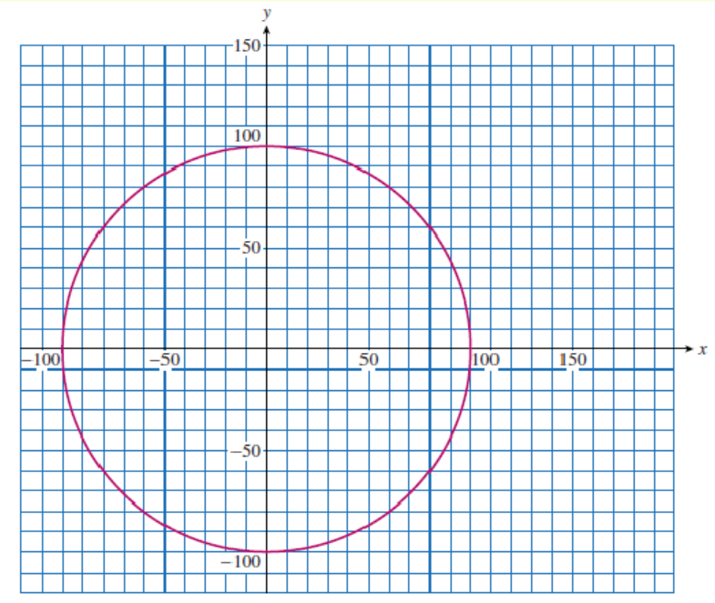

Section 10.7 Projects for Chapter 10
Project 10.1. Global Positioning System.
The Global Positioning System (GPS) is used to determine a location anywhere on the surface of the Earth. The system depends upon a collection of satellites in orbit around the Earth. Each GPS satellite transmits its own position and the current time at regular intervals.
Knowing the speed of the transmissions, a person with a GPS receiver on earth can calculate his or her distance from the satellite by comparing the time of transmission with the time when it receives the signal. Of course, there are many points at the same distance from the satellite—in fact, the set of all points at a certain distance \(r\) from the satellite lie on a sphere centered at the satellite. That is why there are several satellites: you calculate your position by finding the intersection point of several such spheres centered on different satellites.
Here is a simplified, two-dimensional model of a GPS system in which the satellites and the receiver all lie in the \(xy\)-plane, instead of in three-dimensional space. In this model we'll need data from two GPS satellites. The satellites are orbiting along a circle of radius 100 meters centered at the origin. You have a receiver inside that circle, and would like to know the coordinates of your position within the circle. To make the computations simpler, we will also assume that the satellite transmissions travel at 5 meters per second.
- A signal from Satellite A arrives 18 seconds after it was transmitted. How far are you from Satellite A?
- The signal says that Satellite A was located at \((100, 0)\) at the time of transmission. On the grid below, use a compass to sketch a graph showing your possible positions relative to Satellite A. 
- Find an equation for the graph you sketched in part 2.
- A signal from Satellite B arrives 8.4 seconds after it was transmitted. How far are you from Satellite B?
- The signal says that Satellite B was located at \((28, 96)\) at the time of transmission. Use a compass to sketch a graph showing your possible positions relative to Satellite B.
- Find an equation for the graph you sketched in part 5.
- Your position must lie at the intersection point, \(P\text{,}\) of your two graphs. Estimate the coordinates of your position from the graph. (Remember that you are within the orbits of the satellites.)
- Find the coordinates of \(P\) algebraically by solving a system of equations.
- Verify that the ordered pairs \((28, 54)\) and \((68.32, 84.24)\) both satisfy the equations you wrote in part 3 and part 6. What are the coordinates of \(P\text{?}\)
There are important extra considerations for the real Global Positioning System. The receiver's position is not restricted to the \(xy\)-plane, so it is given by three coordinates instead of two. Also, the receiver's clock may not be synchronized with the clocks on the satellites, so there is a fourth variable corresponding to the possible error in the receiver's clock. Thus the GPS receiver must solve a system of four quadratic equations in four unknowns. Each equation comes from a different satellite, so there must be at least four satellites "visible" to the receiver at any given time.
Project 10.2. Long Range Navigation.
The Global Positioning System (GPS) is very accurate, but it depends on perfectly synchronized clocks. An older navigational system, called LORAN (Long Range Navigation), is still used by sailors to locate their position at sea. The system works by finding the intersection of two hyperbolas.
Radio transmitters at known positions broadcast signals simultaneously, and the navigator notes the difference in the arrival times of the two signals. (This difference is calculated using only the navigator's clock, and does not depend on the time when the signals were transmitted.) From the time difference the navigator computes the difference in the distances to the two transmitters, using the speed of radio waves.
We know that a hyperbola is the set of all points in the plane for which the difference of the distances from two fixed points is a constant. Thus, the navigator's position lies on a hyperbola with the two transmitters as the foci, as shown above. A third transmitter signal compared with either of the first two determines a second hyperbola. The navigator's position must be at the intersection of the two hyperbolas.
Your ship receives LORAN signals from transmitters located at \(A(0,28),~ B(0,-28)\text{,}\) and \(C(-120, -28)\text{.}\) You calculate that you are 14 kilometers closer to \(A\) than to \(B\text{,}\) and 72 kilometers closer to \(B\) than to \(C\text{.}\) It follows that your position must lie on the hyperbolas
A graph of the hyperbolas is shown below.
- Identify which hyperbola is the graph of each equation. On which branch of each hyperbola is your ship located?
- Solve the equation of each hyperbola for \(y\text{.}\)
-
Use a graphing utility to graph the two hyperbolas on the window
\begin{equation*} \begin{aligned}[t] \text{Xmin} = -130~~~\amp \text{Xmax} = 130\\ \text{Ymin} = -130~~~\amp \text{Ymax} = 40\\ \end{aligned} \end{equation*}Locate the point \(P\) corresponding to the position of your ship.
- Use your graphing utility to find the coordinates of your ship.
- Calculate the distances \(AP, ~BP\text{,}\) and \(CP\text{.}\)
- Verify that your position is 14 kilometers closer to \(A\) than to \(B\text{,}\) and 72 kilometers closer to \(B\) than to \(C\text{.}\)